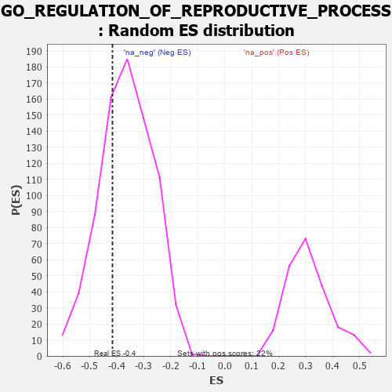

| | | Dataset | 7d |
| Phenotype | NoPhenotypeAvailable |
| Upregulated in class | na_neg |
| GeneSet | GO_REGULATION_OF_REPRODUCTIVE_PROCESS |
| Enrichment Score (ES) | -0.4157701 |
| Normalized Enrichment Score (NES) | -1.1439095 |
| Nominal p-value | 0.29691517 |
| FDR q-value | 0.7079661 |
| FWER p-Value | 1.0 |
Table: GSEA Results Summary
 Fig 1: Enrichment plot: GO_REGULATION_OF_REPRODUCTIVE_PROCESS
Fig 1: Enrichment plot: GO_REGULATION_OF_REPRODUCTIVE_PROCESS
Profile of the Running ES Score & Positions of GeneSet Members on the Rank Ordered List
| PROBE | GENE SYMBOL | GENE_TITLE | RANK IN GENE LIST | RANK METRIC SCORE | RUNNING ES | CORE ENRICHMENT | | 1 | WEE2 | | | 333 | 0.766 | 0.0004 | No |
| 2 | CDC20 | | | 480 | 0.644 | 0.0175 | No |
| 3 | SRC | | | 1128 | 0.459 | -0.0386 | No |
| 4 | P2RY1 | | | 1416 | 0.407 | -0.0523 | No |
| 5 | INHBB | | | 1514 | 0.388 | -0.0431 | No |
| 6 | RXRA | | | 1647 | 0.365 | -0.0395 | No |
| 7 | AGO2 | | | 1767 | 0.343 | -0.0356 | No |
| 8 | BMP7 | | | 2107 | 0.290 | -0.0623 | No |
| 9 | C1QBP | | | 2189 | 0.278 | -0.0572 | No |
| 10 | EAF2 | | | 2278 | 0.263 | -0.0537 | No |
| 11 | RAD1 | | | 2528 | 0.223 | -0.0728 | No |
| 12 | RTF2 | | | 2615 | 0.210 | -0.0720 | No |
| 13 | WNT4 | | | 3023 | 0.146 | -0.1152 | No |
| 14 | FZR1 | | | 3205 | 0.122 | -0.1313 | No |
| 15 | PRDX4 | | | 3214 | 0.120 | -0.1257 | No |
| 16 | DMRT1 | | | 3546 | 0.068 | -0.1636 | No |
| 17 | GLRA1 | | | 3957 | 0.001 | -0.2152 | No |
| 18 | TIMP1 | | | 4209 | -0.043 | -0.2444 | No |
| 19 | TPPP2 | | | 4800 | -0.157 | -0.3101 | No |
| 20 | ASPM | | | 5637 | -0.358 | -0.3956 | Yes |
| 21 | ADA | | | 5798 | -0.405 | -0.3934 | Yes |
| 22 | STK11 | | | 5922 | -0.443 | -0.3844 | Yes |
| 23 | CALR | | | 6077 | -0.499 | -0.3763 | Yes |
| 24 | STK4 | | | 6145 | -0.518 | -0.3561 | Yes |
| 25 | INSR | | | 6204 | -0.538 | -0.3337 | Yes |
| 26 | RGN | | | 6233 | -0.547 | -0.3070 | Yes |
| 27 | PLB1 | | | 6983 | -0.925 | -0.3503 | Yes |
| 28 | AR | | | 7169 | -1.046 | -0.3158 | Yes |
| 29 | CIB1 | | | 7280 | -1.152 | -0.2660 | Yes |
| 30 | ASTL | | | 7290 | -1.159 | -0.2032 | Yes |
| 31 | MSX2 | | | 7299 | -1.171 | -0.1395 | Yes |
| 32 | OVOL1 | | | 7341 | -1.214 | -0.0777 | Yes |
| 33 | PLCB1 | | | 7904 | -2.841 | 0.0084 | Yes |
Table: GSEA details [plain text format]

Fig 2: GO_REGULATION_OF_REPRODUCTIVE_PROCESS: Random ES distribution
Gene set null distribution of ES for GO_REGULATION_OF_REPRODUCTIVE_PROCESS